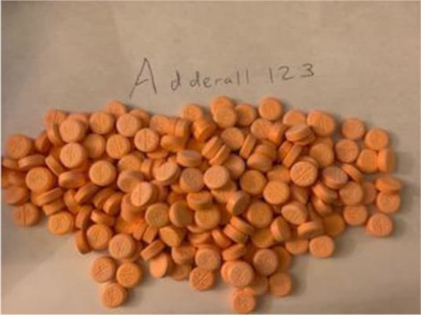
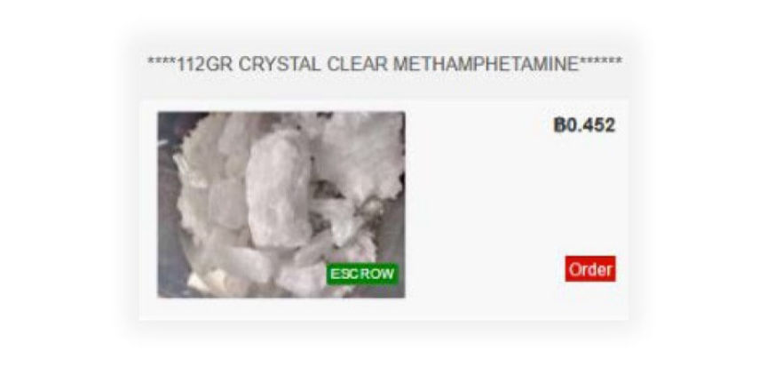
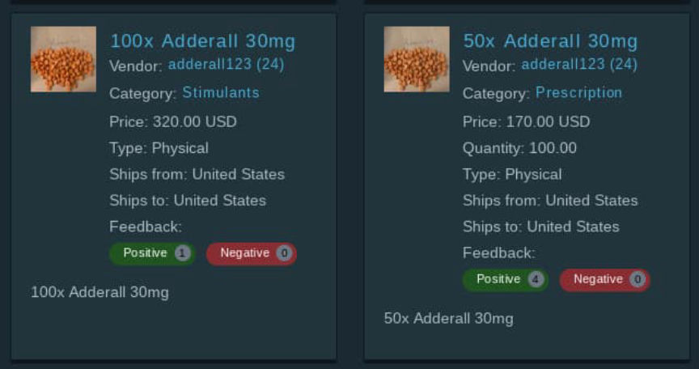
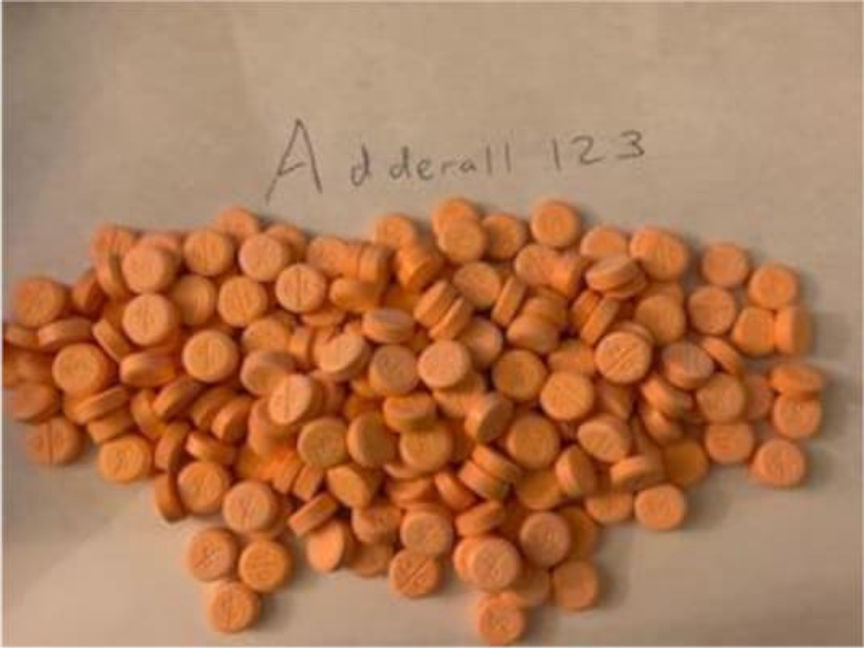
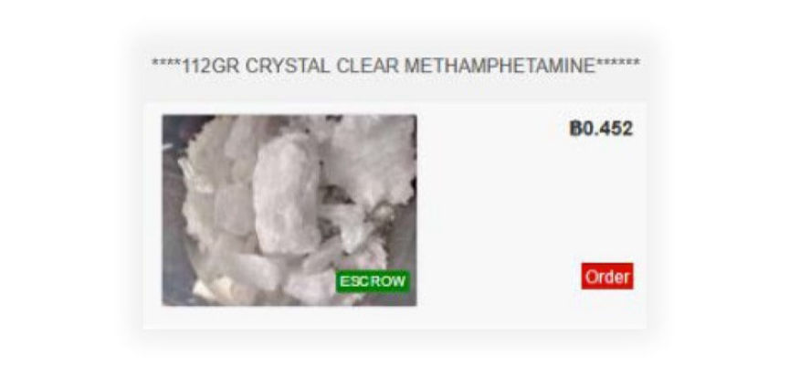
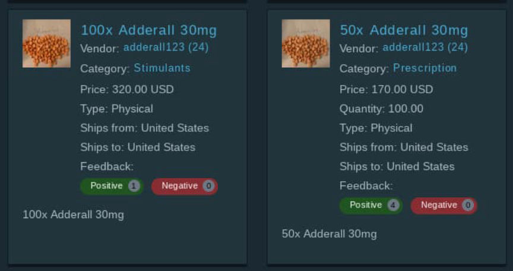

Adderall123 Bust: iCloud Records, USPS Profiling, Surveillance
~5 min read | Published on 2022-05-03, tagged Darkweb-Vendor, Drug-Bust using 1160 words.
Under the username “Adderall123” on darkweb markets, two Bay Area men allegedly shipped counterfeit Adderall pills to customers throughout the United States.
An investigation led by the Drug Enforcement Administration (DEA) and the United States Postal Inspection Service (USPIS) resulted in the arrest of Andrew and Tony Tan for allegedly selling methamphetamine on darkweb markets. According to DEA Special Agent Colin Hart, Andrew, Tony, and one other co-conspirator operated the vendor account “Adderall123” on several darkweb marketplaces, including White House Market (WHM), Torrez Market, ASAP Market, and Empire Market.

The investigation into Adderall123 began in April 2021. Investigators examined the vendor’s profile on White House Market, where Adderall123 had been selling 30 milligram Adderall pills for sale in quantities of 30, 50, and 100 pills. White House Market, which shut down in October 2021, allowed vendors to import feedback from vendor profiles on different marketplaces. Adderall123 had imported feedback from Empire Market, indicating that the vendor had a presence on the darkweb as early as August 2020.
In September 2021, Special Agent Hart conducted an undercover purchase (“UC Purchase #4”) of 200 30mg Adderall pills from Adderall123 on White House Market. Agents had the package shipped to an “Arlo Krauser” at an address in Elverta, California, controlled by law enforcement.
Before UC Purchase #4 had occurred, a USPIS General Analyst had identified the Westlake Post Office in Daly City, California, as a post office used by Adderall123. A mailing at the Westlake Post Office on September 17, 2021, had been flagged as a package shipped by Adderall123.
“[The] mailing had been identified as part of a set of mailings flagged by a USPIS General Analyst (GA) as suspected ADDERALL123 mailings. The packages in these mailings were identified based on similarities they shared with previous suspected ADDERALL123 mailings and prior undercover purchases from ADDERALL123. These similarities included over-the-counter mailing transactions of large volumes of Priority Mail Flat Rate envelopes, mailed out of 940 and 941 zip codes, mailed to addresses all over the U.S., with handwritten labels (often with fake names or fake return addresses), and postage-paid for in cash.”

Agents reviewed the post office surveillance footage from September 17, 2021. They observed an Asian male with glasses, a black face mask, and a grey hoodie mailing a stack of Priority Mail Flat Rate Envelopes. The suspect, later identified as Andrew Tan, left the post office and entered a white Subaru SUV with honeycomb-shaped rims.
On September 30, 2021, agents set up surveillance at multiple post offices in South San Francisco, Daly City, San Bruno, and San Francisco. A Postal Inspector at the Daly City Main Post Office observed Andrew Tan conducting an over-the-counter transaction. The Postal Inspector walked to the parking lot and recorded the license plate during the transaction. After the suspect had left, the Postal Inspector returned to the post office and recovered nine Priority Mail Flat Rate Envelopes. The suspect had paid for them with cash, and all of the packages had a handwritten return address (“Jimmy Leung, 191 Whittier St, Daly City, CA 94014”). One of the packages was addressed to the name and address provided during UC Purchase #4.

The package contained 207 orange, circular pills pressed with “dp” and “30.” The pills tested positive for methamphetamine.
Three controlled purchases are described in the criminal complaint. After receiving similar counterfeit Adderall pills from a different order, agents sent the pills to a lab to have them tested for fingerprints. One of the pills tested positive for a fingerprint that matched a fingerprint card for Andrew Tan.
According to the California DMV, the license plate was registered to Andrew Tan or one of his relatives at an address investigators believe belongs to his parents.
Apple gave agents access to the data stored in Tan’s iCloud account.
“Agents observed a video, dated June 16, 2020, which shows Tony TAN sitting in an indoor location, taking orange circular pills from a large clear zip-lock bag and sliding the pills onto a white piece of paper. The pills in the video match the appearance of the counterfeit Adderall pills pressed with methamphetamine that agents have purchased and seized throughout this investigation, including those contained within UC Purchase #4 and Parcel Intercept #2. GPS location data for this video is [Lat], [Long], which shows to be on the street outside of [Address], the suspected residence of Andrew TAN and Tony TAN’s parents. I know the individual handling the pills in the video to be Tony TAN because his appearance matches that of Tony TAN in his DMV photo, a family photo of Tony TAN found on Andrew TAN’s iCloud account, bank photos and video of Tony TAN making cash deposits into his bank account, and Tony TAN as observed on surveillance and pole camera footage during this investigation.”
Agents also obtained a copy of Tan’s iMessages. The records contained incriminating messages sent to and from Tan’s girlfriend.
A message sent to Tan from his girlfriend:
“I am trying to be open-minded at least about weed. You smoking with my brother multiple times. That time where you were so high you couldn’t drive after you smoked with Matt. You smoking with Nathan. I even smoked with you. Eating them with you. But at least you were upfront with me. You said it would only be with me, but you don’t follow through with anything that you say. I didn’t like it but I tolerated you having this job. We are waiting for you to pick up your career and you claim it got fcked bc of this job. Now you’re moving onto pills. the first time you told me about the pills I said to get rid of them. You didn’t and I let it go. You offered them to me and at one point I even considered it despite my values bc I should be more open minded and at least give it a try. But that’s against what I believe in and yet you still suggest them to me every now and then. You’re offering them to my brother and now you want to sell this shit?! That’s too much for me to try to understand.”
In another message, Tan sent a message to his girlfriend:
“I don’t supply. It’s like Matt supplies me. Its like Natalie buys them. And shares with your brother. She’s not supplying. It’s called sharing what we hav.”
[img=]Tan's girlfriend thought he sold actual Adderall aparently.[/img]
Police arrested Andrew and Tony Tan in April 2022. Both men face one count of possession with intent to distribute 5 grams or more of methamphetamine and 50 grams or more of a mixture or substance containing detectable amounts of methamphetamine. Tony Tan’s court documents are sealed, and the third co-conspirator’s court documents are unavailable.
If convicted, Andrew and Tony face a minimum of five years imprisonment.
Complaint pdf
Vendors with “adderall” in their username have a thing about selling methamphetamine apparently.
An investigation led by the Drug Enforcement Administration (DEA) and the United States Postal Inspection Service (USPIS) resulted in the arrest of Andrew and Tony Tan for allegedly selling methamphetamine on darkweb markets. According to DEA Special Agent Colin Hart, Andrew, Tony, and one other co-conspirator operated the vendor account “Adderall123” on several darkweb marketplaces, including White House Market (WHM), Torrez Market, ASAP Market, and Empire Market.

Adderall123 sold counterfeit Adderall pills on several marketplaces.
The investigation into Adderall123 began in April 2021. Investigators examined the vendor’s profile on White House Market, where Adderall123 had been selling 30 milligram Adderall pills for sale in quantities of 30, 50, and 100 pills. White House Market, which shut down in October 2021, allowed vendors to import feedback from vendor profiles on different marketplaces. Adderall123 had imported feedback from Empire Market, indicating that the vendor had a presence on the darkweb as early as August 2020.
In September 2021, Special Agent Hart conducted an undercover purchase (“UC Purchase #4”) of 200 30mg Adderall pills from Adderall123 on White House Market. Agents had the package shipped to an “Arlo Krauser” at an address in Elverta, California, controlled by law enforcement.
Before UC Purchase #4 had occurred, a USPIS General Analyst had identified the Westlake Post Office in Daly City, California, as a post office used by Adderall123. A mailing at the Westlake Post Office on September 17, 2021, had been flagged as a package shipped by Adderall123.
“[The] mailing had been identified as part of a set of mailings flagged by a USPIS General Analyst (GA) as suspected ADDERALL123 mailings. The packages in these mailings were identified based on similarities they shared with previous suspected ADDERALL123 mailings and prior undercover purchases from ADDERALL123. These similarities included over-the-counter mailing transactions of large volumes of Priority Mail Flat Rate envelopes, mailed out of 940 and 941 zip codes, mailed to addresses all over the U.S., with handwritten labels (often with fake names or fake return addresses), and postage-paid for in cash.”

Purported users had conflicting conclusions about the active ingredient of Adderall123's products.
Agents reviewed the post office surveillance footage from September 17, 2021. They observed an Asian male with glasses, a black face mask, and a grey hoodie mailing a stack of Priority Mail Flat Rate Envelopes. The suspect, later identified as Andrew Tan, left the post office and entered a white Subaru SUV with honeycomb-shaped rims.
On September 30, 2021, agents set up surveillance at multiple post offices in South San Francisco, Daly City, San Bruno, and San Francisco. A Postal Inspector at the Daly City Main Post Office observed Andrew Tan conducting an over-the-counter transaction. The Postal Inspector walked to the parking lot and recorded the license plate during the transaction. After the suspect had left, the Postal Inspector returned to the post office and recovered nine Priority Mail Flat Rate Envelopes. The suspect had paid for them with cash, and all of the packages had a handwritten return address (“Jimmy Leung, 191 Whittier St, Daly City, CA 94014”). One of the packages was addressed to the name and address provided during UC Purchase #4.

ASAP is the only remaining market where Adderall123 had an account.
The package contained 207 orange, circular pills pressed with “dp” and “30.” The pills tested positive for methamphetamine.
Three controlled purchases are described in the criminal complaint. After receiving similar counterfeit Adderall pills from a different order, agents sent the pills to a lab to have them tested for fingerprints. One of the pills tested positive for a fingerprint that matched a fingerprint card for Andrew Tan.
According to the California DMV, the license plate was registered to Andrew Tan or one of his relatives at an address investigators believe belongs to his parents.
Apple gave agents access to the data stored in Tan’s iCloud account.
“Agents observed a video, dated June 16, 2020, which shows Tony TAN sitting in an indoor location, taking orange circular pills from a large clear zip-lock bag and sliding the pills onto a white piece of paper. The pills in the video match the appearance of the counterfeit Adderall pills pressed with methamphetamine that agents have purchased and seized throughout this investigation, including those contained within UC Purchase #4 and Parcel Intercept #2. GPS location data for this video is [Lat], [Long], which shows to be on the street outside of [Address], the suspected residence of Andrew TAN and Tony TAN’s parents. I know the individual handling the pills in the video to be Tony TAN because his appearance matches that of Tony TAN in his DMV photo, a family photo of Tony TAN found on Andrew TAN’s iCloud account, bank photos and video of Tony TAN making cash deposits into his bank account, and Tony TAN as observed on surveillance and pole camera footage during this investigation.”
Agents also obtained a copy of Tan’s iMessages. The records contained incriminating messages sent to and from Tan’s girlfriend.
A message sent to Tan from his girlfriend:
“I am trying to be open-minded at least about weed. You smoking with my brother multiple times. That time where you were so high you couldn’t drive after you smoked with Matt. You smoking with Nathan. I even smoked with you. Eating them with you. But at least you were upfront with me. You said it would only be with me, but you don’t follow through with anything that you say. I didn’t like it but I tolerated you having this job. We are waiting for you to pick up your career and you claim it got fcked bc of this job. Now you’re moving onto pills. the first time you told me about the pills I said to get rid of them. You didn’t and I let it go. You offered them to me and at one point I even considered it despite my values bc I should be more open minded and at least give it a try. But that’s against what I believe in and yet you still suggest them to me every now and then. You’re offering them to my brother and now you want to sell this shit?! That’s too much for me to try to understand.”
In another message, Tan sent a message to his girlfriend:
“I don’t supply. It’s like Matt supplies me. Its like Natalie buys them. And shares with your brother. She’s not supplying. It’s called sharing what we hav.”
[img=]Tan's girlfriend thought he sold actual Adderall aparently.[/img]
Police arrested Andrew and Tony Tan in April 2022. Both men face one count of possession with intent to distribute 5 grams or more of methamphetamine and 50 grams or more of a mixture or substance containing detectable amounts of methamphetamine. Tony Tan’s court documents are sealed, and the third co-conspirator’s court documents are unavailable.
If convicted, Andrew and Tony face a minimum of five years imprisonment.
Complaint pdf
Vendors with “adderall” in their username have a thing about selling methamphetamine apparently.